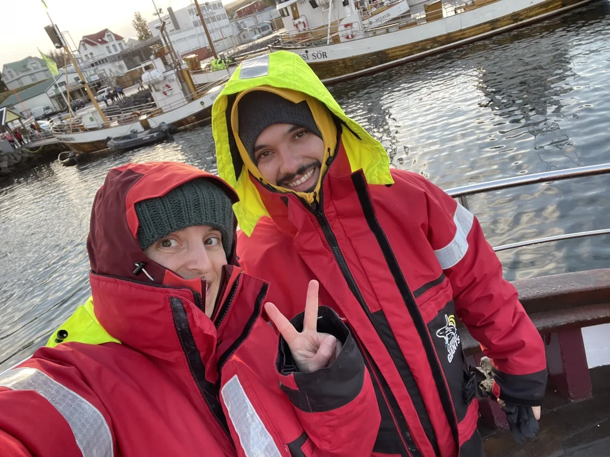

Về Chúng Tôi

Chúng tôi là một đội ngũ rất nhỏ. Nhỏ đến mức đôi khi chúng tôi dường như vô hình.
Và đó cũng là lý do Kanjidon tồn tại.
Chúng tôi bắt đầu như nhiều người khác: sinh viên tự học tiếng Nhật, không có đường tắt, không có công thức thần kỳ. Giờ, ngày, năm dành cho những kanji không chịu đi vào đầu và những phương pháp hoạt động trên giấy nhưng chết ngay lần phân tâm đầu tiên. Cuối cùng, chúng tôi đã đạt được mục tiêu đó: trình độ N1. Đổ mồ hôi để có được. Xứng đáng. Thực sự.
Trong suốt hành trình đó, có một câu hỏi luôn quay lại, khó chịu như một kanji không chịu được ghi nhớ: "Tại sao không có ứng dụng dạy tiếng Nhật theo cách chúng tôi muốn?"
Vì vậy chúng tôi quyết định xây dựng nó.
Kanjidon sinh ra từ giấc mơ học tập hiệu quả, nhưng cũng hấp dẫn. Một nơi kỷ luật gặp gỡ trò chơi, nơi sự kiên trì được thưởng, nơi nỗ lực không biến mất nhưng ngừng nhàm chán. Ứng dụng mà chúng tôi ước có khi còn đang học.
Không chỉ việc học thúc đẩy chúng tôi. Chúng tôi yêu sâu sắc văn hóa Nhật Bản trong mọi hình thức. Du lịch, lạc lối trong các địa điểm, đi bộ xa, leo cao.
Chúng tôi yêu văn hóa đại chúng, những câu chuyện, những thế giới tưởng tượng biết cách chạm đến cảm xúc. Chúng tôi viết tiểu thuyết, tạo dự án, thử nghiệm. Một số bạn biết, một số không. Một số chưa ra đời.
Kanjidon là nơi tất cả điều này gặp nhau. Học tập nghiêm túc, đam mê chân thực, mong muốn làm điều gì đó khác biệt mà không mất đi sự chân thực.
Chúng tôi không phải công ty khổng lồ.
Chúng tôi là những người tin đủ mạnh vào một ý tưởng để biến nó thành hiện thực.
Và đây chỉ là khởi đầu.
— Kanjidon Team